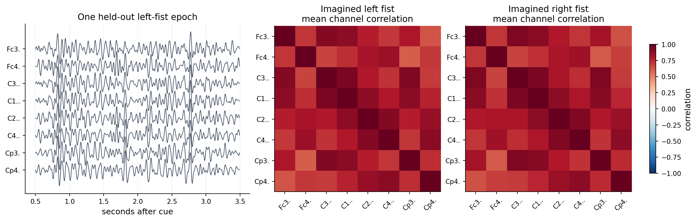
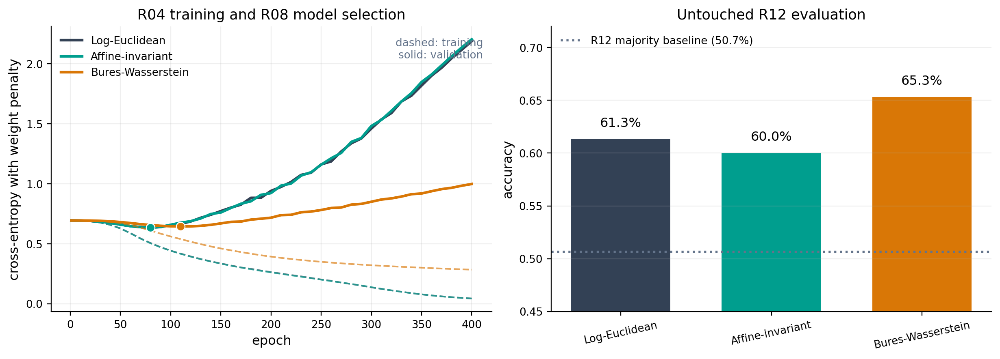
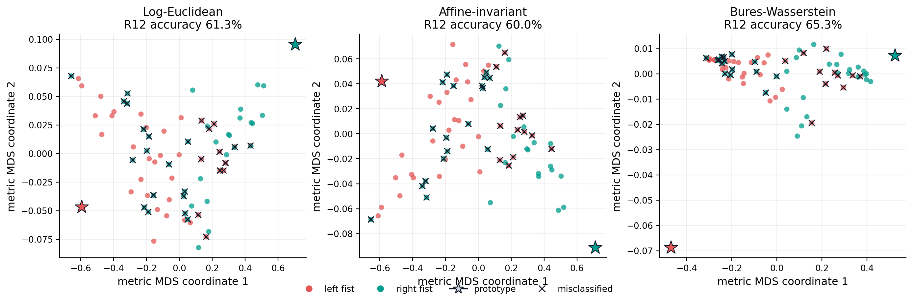
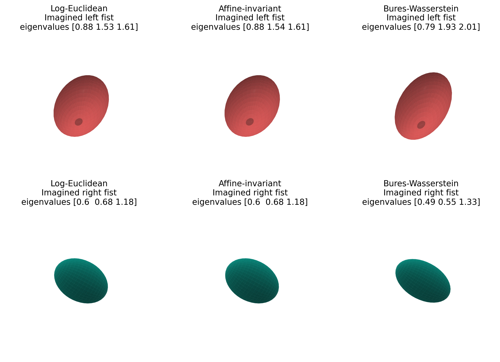

SPD prototype networks for motor-imagery EEG#
Electroencephalography records a multichannel signal whose second-order structure changes with brain state. For an epoch \(X\in\mathbb R^{d\times T}\), a regularized spatial covariance descriptor is
Covariance matrices are symmetric positive definite (SPD), so treating them as unconstrained vectors discards their natural geometry. Riemannian covariance classifiers have a long history in brain–computer interfaces [Barachant et al., 2012], while SPD-valued neural layers provide a way to learn nonlinear representations without leaving the cone [Huang and Van Gool, 2017].
This tutorial builds a small, deterministic network on real motor-imagery EEG. It compares log-Euclidean, affine-invariant, and Bures–Wasserstein prototype heads while keeping the data, encoder, initialization, and optimization schedule fixed. The goal is to demonstrate an end-to-end geometric learning pattern, not to claim benchmark-level EEG decoding.
Public data and reproducible scope#
The source is the open PhysioNet EEG Motor Movement/Imagery Dataset [Schalk, 2009], recorded with the BCI2000 system [Schalk et al., 2004]. We use:
subjects S001 through S005;
unilateral motor-imagery runs R04, R08, and R12;
the eight sensorimotor channels FC3, FC4, C3, C1, C2, C4, CP3, and CP4; and
the interval from 0.5 to 3.5 seconds after each left- or right-fist cue.
GeoJAX vendors this small derivative so the page executes without a network connection or an EDF reader. It contains the selected signal epochs before filtering or covariance estimation. The provenance and license notice records the exact derivation and the upstream Open Data Commons Attribution terms.
from pathlib import Path
import jax
import jax.numpy as jnp
import matplotlib.pyplot as plt
import numpy as np
from matplotlib.lines import Line2D
from scipy.signal import butter, sosfiltfilt
from geojax.geometry import (
SPDAffineInvariant,
SPDBuresWasserstein,
SPDLogEuclidean,
)
from geojax.learning import classical_mds, pairwise_distances
plt.rcParams.update({
"figure.dpi": 210,
"savefig.dpi": 280,
"font.size": 11,
"axes.titlesize": 12,
"axes.labelsize": 11,
"xtick.labelsize": 9,
"ytick.labelsize": 9,
"legend.fontsize": 9,
"axes.spines.top": False,
"axes.spines.right": False,
})
class_names = {0: "Imagined left fist", 1: "Imagined right fist"}
class_colors = np.array(["#E45756", "#009E8E"])
geometry_colors = {
"Log-Euclidean": "#334155",
"Affine-invariant": "#009E8E",
"Bures-Wasserstein": "#D97706",
}
Load and audit the derivative#
Every subject contributes 15 labeled trials per run. Run R04 is used for model selection training, R08 for validation, and R12 is untouched until the final evaluation. After selecting a stopping epoch, we refit from the same initial parameters using R04 and R08 together.
candidate_directories = [
Path("../_static/data/eeg"),
Path("docs/_static/data/eeg"),
]
data_directory = next(path for path in candidate_directories if path.exists())
with np.load(data_directory / "physionet_motor_imagery.npz") as data:
epochs = np.asarray(data["epochs"], dtype=np.float32)
labels = np.asarray(data["labels"], dtype=np.int32)
runs = np.asarray(data["runs"], dtype=np.int32)
subjects = np.asarray(data["subjects"], dtype=np.int32)
channels = np.asarray(data["channels"])
sampling_rate = float(data["sampling_rate"])
epoch_start = float(data["epoch_start_seconds"])
print("epoch array:", epochs.shape)
print("subjects:", np.unique(subjects).tolist())
print("channels:", ", ".join(channels))
for run in (4, 8, 12):
run_labels = labels[runs == run]
print(
f"R{run:02d}: {len(run_labels):3d} trials "
f"({np.sum(run_labels == 0):2d} left, {np.sum(run_labels == 1):2d} right)"
)
epoch array: (225, 8, 480)
subjects: [1, 2, 3, 4, 5]
channels: Fc3., Fc4., C3.., C1.., C2.., C4.., Cp3., Cp4.
R04: 75 trials (38 left, 37 right)
R08: 75 trials (37 left, 38 right)
R12: 75 trials (38 left, 37 right)
From EEG epochs to SPD matrices#
Motor imagery is commonly studied through sensorimotor rhythms. We apply a fourth-order 8–30 Hz Butterworth band-pass filter, center every channel, and form its sample covariance. Trace normalization removes overall trial scale, and a small ridge makes positive definiteness explicit:
The ridge is numerical regularization, not a learned parameter. GeoJAX then checks every resulting matrix against the SPD constraint.
sos = butter(
4,
(8.0, 30.0),
btype="bandpass",
fs=sampling_rate,
output="sos",
)
filtered_epochs = sosfiltfilt(sos, epochs, axis=-1).astype(np.float32)
filtered_epochs -= filtered_epochs.mean(axis=-1, keepdims=True)
covariances_np = (
filtered_epochs @ np.swapaxes(filtered_epochs, -1, -2)
/ (filtered_epochs.shape[-1] - 1)
)
mean_variance = np.trace(covariances_np, axis1=-2, axis2=-1) / len(channels)
covariances_np /= mean_variance[:, None, None]
covariances_np += 1e-3 * np.eye(len(channels), dtype=np.float32)[None]
input_geometry = SPDLogEuclidean(size=(len(channels), len(channels)))
covariances = jnp.asarray(covariances_np)
print("covariance array:", covariances.shape)
print("all matrices are SPD:", bool(jnp.all(input_geometry.belongs(covariances))))
print(
"smallest eigenvalue:",
f"{float(jnp.min(jnp.linalg.eigvalsh(covariances))):.3e}",
)
covariance array: (225, 8, 8)
all matrices are SPD: True
smallest eigenvalue: 6.522e-03
The left panel below shows one filtered epoch with vertical channel offsets. The other panels show class-average correlation matrices computed from the two fitting runs. Correlations are used only for visualization; the network receives the regularized covariance matrices.
def covariance_to_correlation(matrix):
standard_deviation = np.sqrt(np.diagonal(matrix, axis1=-2, axis2=-1))
return matrix / standard_deviation[..., :, None] / standard_deviation[..., None, :]
time = epoch_start + np.arange(filtered_epochs.shape[-1]) / sampling_rate
example_index = int(np.flatnonzero((runs == 12) & (labels == 0))[0])
offsets = 55.0 * np.arange(len(channels))[::-1]
fit_mask_np = runs != 12
class_correlations = []
for label in (0, 1):
group = covariances_np[fit_mask_np & (labels == label)]
class_correlations.append(covariance_to_correlation(group).mean(axis=0))
fig, axes = plt.subplots(
1,
3,
figsize=(13.2, 4.1),
gridspec_kw={"width_ratios": [1.35, 1.0, 1.0]},
constrained_layout=True,
)
for channel_index, channel in enumerate(channels):
axes[0].plot(
time,
filtered_epochs[example_index, channel_index] + offsets[channel_index],
linewidth=0.75,
color="#334155",
)
axes[0].set(
title="One held-out left-fist epoch",
xlabel="seconds after cue",
yticks=offsets,
yticklabels=channels,
)
axes[0].grid(axis="x", alpha=0.18)
for axis, label, correlation in zip(axes[1:], (0, 1), class_correlations):
image = axis.imshow(correlation, cmap="RdBu_r", vmin=-1.0, vmax=1.0)
axis.set(
title=f"{class_names[label]}\nmean channel correlation",
xticks=np.arange(len(channels)),
yticks=np.arange(len(channels)),
xticklabels=channels,
yticklabels=channels,
)
axis.tick_params(axis="x", rotation=45)
fig.colorbar(image, ax=axes[1:], shrink=0.76, label="correlation")
plt.show()

An SPD-valued prototype network#
The input chart maps each \(8\times8\) covariance to its upper-triangular matrix-log coordinates,
A two-layer encoder produces a symmetric \(3\times3\) matrix:
The latent activation is
Two trainable symmetric parameters similarly define SPD prototypes \(P_0\) and \(P_1\). Under geometry \(g\), the class logits are
This is deliberately smaller than SPDNet: the matrix-log chart supplies the input coordinates, while the learned representation and prototypes return to the SPD cone. The construction isolates the effect of the terminal geometry and exercises differentiable spectral operations inside compiled JAX training.
input_rows, input_columns = np.triu_indices(len(channels))
log_covariances = input_geometry.logm(covariances)
features = log_covariances[..., input_rows, input_columns]
latent_size = 3
latent_chart = SPDLogEuclidean(size=(latent_size, latent_size))
def symmetric_from_vector(vector, size):
rows, columns = np.triu_indices(size)
matrix = jnp.zeros(vector.shape[:-1] + (size, size), dtype=vector.dtype)
matrix = matrix.at[..., rows, columns].set(vector)
matrix = matrix.at[..., columns, rows].set(vector)
return matrix
def init_parameters(key):
keys = jax.random.split(key, 3)
hidden_size = 18
latent_coordinates = latent_size * (latent_size + 1) // 2
return {
"input_weight": 0.12 * jax.random.normal(
keys[0],
shape=(features.shape[-1], hidden_size),
),
"input_bias": jnp.zeros(hidden_size),
"output_weight": 0.12 * jax.random.normal(
keys[1],
shape=(hidden_size, latent_coordinates),
),
"output_bias": jnp.zeros(latent_coordinates),
"prototypes": 0.08 * jax.random.normal(
keys[2],
shape=(2, latent_size, latent_size),
),
"raw_temperature": jnp.asarray(0.0),
}
def make_model(geometry):
def forward(parameters):
hidden = jnp.tanh(
features @ parameters["input_weight"] + parameters["input_bias"]
)
latent_vector = (
hidden @ parameters["output_weight"] + parameters["output_bias"]
)
latent_tangent = 0.25 * jnp.tanh(
symmetric_from_vector(latent_vector, latent_size)
)
latent_points = latent_chart.expm(latent_tangent)
prototype_tangent = 0.5 * (
parameters["prototypes"]
+ jnp.swapaxes(parameters["prototypes"], -1, -2)
)
prototypes = latent_chart.expm(prototype_tangent)
temperature = jax.nn.softplus(parameters["raw_temperature"]) + 0.5
logits = -temperature * pairwise_distances(
geometry,
latent_points,
prototypes,
squared=True,
)
return logits, latent_points, prototypes, temperature
return forward
Select, refit, and evaluate#
All three models start from exactly the same parameter pytree and use the same full-batch Adam update. We use R04 to choose the stopping epoch by R08 cross-entropy, then restart and refit on R04 and R08 for that many updates. R12 is evaluated once after refitting.
The procedure controls one important source of optimistic bias: neither the stopping epoch nor any parameter update uses the test run. It does not, however, replace repeated-subject evaluation for a scientific benchmark.
labels_jax = jnp.asarray(labels)
selection_mask = jnp.asarray(runs == 4, dtype=jnp.float32)
validation_mask = jnp.asarray(runs == 8, dtype=jnp.float32)
fit_mask = jnp.asarray(runs != 12, dtype=jnp.float32)
test_mask = runs == 12
geometries = {
"Log-Euclidean": SPDLogEuclidean(size=(latent_size, latent_size)),
"Affine-invariant": SPDAffineInvariant(size=(latent_size, latent_size)),
"Bures-Wasserstein": SPDBuresWasserstein(size=(latent_size, latent_size)),
}
def zeros_like_tree(tree):
return jax.tree_util.tree_map(jnp.zeros_like, tree)
def make_training_functions(geometry):
forward = make_model(geometry)
def objective(parameters, mask):
logits, _, _, _ = forward(parameters)
log_probabilities = jax.nn.log_softmax(logits, axis=-1)
selected = log_probabilities[jnp.arange(len(labels_jax)), labels_jax]
data_loss = -jnp.sum(mask * selected) / jnp.sum(mask)
regularizer = 1e-4 * (
jnp.sum(parameters["input_weight"] ** 2)
+ jnp.sum(parameters["output_weight"] ** 2)
)
return data_loss + regularizer
@jax.jit
def step(parameters, first_moment, second_moment, iteration, mask):
value, gradients = jax.value_and_grad(objective)(parameters, mask)
first_moment = jax.tree_util.tree_map(
lambda moment, gradient: 0.9 * moment + 0.1 * gradient,
first_moment,
gradients,
)
second_moment = jax.tree_util.tree_map(
lambda moment, gradient: 0.999 * moment + 0.001 * gradient**2,
second_moment,
gradients,
)
corrected_first = jax.tree_util.tree_map(
lambda moment: moment / (1.0 - 0.9**iteration),
first_moment,
)
corrected_second = jax.tree_util.tree_map(
lambda moment: moment / (1.0 - 0.999**iteration),
second_moment,
)
parameters = jax.tree_util.tree_map(
lambda parameter, mean, variance: (
parameter - 2e-3 * mean / (jnp.sqrt(variance) + 1e-8)
),
parameters,
corrected_first,
corrected_second,
)
return parameters, first_moment, second_moment, value
return forward, objective, step
def train_geometry(geometry, maximum_epochs=400):
forward, objective, step = make_training_functions(geometry)
parameters = init_parameters(jax.random.key(19))
first_moment = zeros_like_tree(parameters)
second_moment = zeros_like_tree(parameters)
history = {"epoch": [], "training": [], "validation": []}
best_validation = float("inf")
selected_epoch = 1
for epoch in range(1, maximum_epochs + 1):
parameters, first_moment, second_moment, _ = step(
parameters,
first_moment,
second_moment,
jnp.asarray(epoch),
selection_mask,
)
if epoch == 1 or epoch % 10 == 0:
training_loss = float(objective(parameters, selection_mask))
validation_loss = float(objective(parameters, validation_mask))
history["epoch"].append(epoch)
history["training"].append(training_loss)
history["validation"].append(validation_loss)
if validation_loss < best_validation:
best_validation = validation_loss
selected_epoch = epoch
parameters = init_parameters(jax.random.key(19))
first_moment = zeros_like_tree(parameters)
second_moment = zeros_like_tree(parameters)
for epoch in range(1, selected_epoch + 1):
parameters, first_moment, second_moment, _ = step(
parameters,
first_moment,
second_moment,
jnp.asarray(epoch),
fit_mask,
)
logits, latent_points, prototypes, temperature = forward(parameters)
predictions = np.asarray(jnp.argmax(logits, axis=-1))
fit_accuracy = np.mean(predictions[fit_mask_np] == labels[fit_mask_np])
test_accuracy = np.mean(predictions[test_mask] == labels[test_mask])
return {
"parameters": parameters,
"history": history,
"selected_epoch": selected_epoch,
"latent_points": latent_points,
"prototypes": prototypes,
"temperature": float(temperature),
"predictions": predictions,
"fit_accuracy": float(fit_accuracy),
"test_accuracy": float(test_accuracy),
}
results = {
name: train_geometry(geometry)
for name, geometry in geometries.items()
}
print(
f"{'geometry':20s} {'epoch':>7s} {'fit accuracy':>14s} "
f"{'test accuracy':>15s} {'valid SPD':>11s}"
)
print("-" * 74)
for name, geometry in geometries.items():
result = results[name]
valid = bool(
jnp.all(geometry.belongs(result["latent_points"]))
& jnp.all(geometry.belongs(result["prototypes"]))
)
print(
f"{name:20s} {result['selected_epoch']:7d} "
f"{result['fit_accuracy']:14.3f} {result['test_accuracy']:15.3f} "
f"{str(valid):>11s}"
)
geometry epoch fit accuracy test accuracy valid SPD
--------------------------------------------------------------------------
Log-Euclidean 80 0.767 0.613 True
Affine-invariant 80 0.773 0.600 True
Bures-Wasserstein 110 0.793 0.653 True
The accuracies should be read as one deterministic small-sample result. The important contract is stronger than the particular ranking: every learned activation and prototype remains SPD, and all three losses differentiate through the same network.
Selection histories and held-out accuracy#
The validation curves determine the stopping epochs shown by the dots. Test accuracy is plotted only after the refit. The dotted reference is the majority-class accuracy in R12.
fig, axes = plt.subplots(1, 2, figsize=(11.6, 4.1), constrained_layout=True)
for name, result in results.items():
history = result["history"]
color = geometry_colors[name]
axes[0].plot(
history["epoch"],
history["training"],
color=color,
linewidth=1.4,
linestyle="--",
alpha=0.65,
)
axes[0].plot(
history["epoch"],
history["validation"],
color=color,
linewidth=2.2,
label=name,
)
selected_index = history["epoch"].index(result["selected_epoch"])
axes[0].scatter(
result["selected_epoch"],
history["validation"][selected_index],
color=color,
edgecolor="white",
linewidth=0.8,
s=52,
zorder=4,
)
axes[0].set(
title="R04 training and R08 model selection",
xlabel="epoch",
ylabel="cross-entropy with weight penalty",
)
axes[0].grid(alpha=0.2)
axes[0].legend(frameon=False)
axes[0].text(
0.98,
0.96,
"dashed: training\nsolid: validation",
transform=axes[0].transAxes,
ha="right",
va="top",
color="#64748B",
fontsize=9,
)
names = list(geometries)
test_accuracies = [results[name]["test_accuracy"] for name in names]
bars = axes[1].bar(
names,
test_accuracies,
color=[geometry_colors[name] for name in names],
width=0.66,
)
majority_accuracy = np.max(np.bincount(labels[test_mask])) / np.sum(test_mask)
axes[1].axhline(
majority_accuracy,
color="#64748B",
linestyle=":",
linewidth=1.8,
label=f"R12 majority baseline ({majority_accuracy:.1%})",
)
axes[1].set(
title="Untouched R12 evaluation",
ylabel="accuracy",
ylim=(0.45, 0.72),
)
axes[1].tick_params(axis="x", rotation=12)
axes[1].grid(axis="y", alpha=0.2)
axes[1].legend(frameon=False, loc="upper left")
for bar, value in zip(bars, test_accuracies):
axes[1].text(
bar.get_x() + bar.get_width() / 2,
value + 0.009,
f"{value:.1%}",
ha="center",
va="bottom",
)
plt.show()

Geometry-aware views of the latent SPD matrices#
An SPD matrix does not have canonical two-dimensional coordinates. For each
geometry, we therefore call geojax.learning.classical_mds() on the 75
test activations and the two learned prototypes. The routine computes exact
geodesic distances and applies classical metric scaling solely for display.
The classifier still uses the full \(3\times3\) matrices and exact GeoJAX
distances.
Crosses mark incorrectly classified test trials. Stars are the learned class prototypes.
test_indices = np.flatnonzero(test_mask)
fig, axes = plt.subplots(1, 3, figsize=(13.1, 4.15), constrained_layout=True)
for axis, (name, geometry) in zip(axes, geometries.items()):
result = results[name]
test_points = result["latent_points"][jnp.asarray(test_indices)]
combined = jnp.concatenate([test_points, result["prototypes"]], axis=0)
embedding = classical_mds(geometry, combined, n_components=2)
coordinates = np.asarray(embedding.coordinates)
point_coordinates = coordinates[:-2]
prototype_coordinates = coordinates[-2:]
for label in (0, 1):
class_mask = labels[test_indices] == label
axis.scatter(
point_coordinates[class_mask, 0],
point_coordinates[class_mask, 1],
color=class_colors[label],
s=30,
alpha=0.76,
linewidths=0,
)
mistakes = (
result["predictions"][test_indices]
!= labels[test_indices]
)
axis.scatter(
point_coordinates[mistakes, 0],
point_coordinates[mistakes, 1],
marker="x",
color="#111827",
s=38,
linewidths=1.1,
label="misclassified",
)
for label in (0, 1):
axis.scatter(
prototype_coordinates[label, 0],
prototype_coordinates[label, 1],
marker="*",
color=class_colors[label],
edgecolor="#111827",
linewidth=0.8,
s=210,
zorder=5,
)
axis.set(
title=f"{name}\nR12 accuracy {result['test_accuracy']:.1%}",
xlabel="metric MDS coordinate 1",
ylabel="metric MDS coordinate 2",
)
axis.grid(alpha=0.18)
fig.legend(
handles=[
Line2D(
[0], [0], marker="o", color="none",
markerfacecolor=class_colors[0], markeredgecolor="none",
label="left fist", markersize=7,
),
Line2D(
[0], [0], marker="o", color="none",
markerfacecolor=class_colors[1], markeredgecolor="none",
label="right fist", markersize=7,
),
Line2D(
[0], [0], marker="*", color="#111827",
markerfacecolor="#CBD5E1", label="prototype", markersize=11,
),
Line2D(
[0], [0], marker="x", color="#111827",
linestyle="none", label="misclassified", markersize=7,
),
],
loc="lower center",
ncol=4,
frameon=False,
bbox_to_anchor=(0.5, -0.04),
)
fig.subplots_adjust(bottom=0.22)
plt.show()
/var/folders/d7/f3pc8_lj28s325sl08mrk43w0000gn/T/ipykernel_96728/3891900132.py:82: UserWarning: This figure was using a layout engine that is incompatible with subplots_adjust and/or tight_layout; not calling subplots_adjust.
fig.subplots_adjust(bottom=0.22)

Learned prototypes as covariance ellipsoids#
Every latent prototype \(P\) defines the ellipsoid
Its principal axes are the eigenvectors of \(P\), with radii equal to the square roots of its eigenvalues. The six plots below show the actual learned prototypes, not an additional embedding.
def ellipsoid_surface(matrix, longitude_count=40, latitude_count=24):
longitude = np.linspace(0.0, 2.0 * np.pi, longitude_count)
latitude = np.linspace(0.0, np.pi, latitude_count)
longitude, latitude = np.meshgrid(longitude, latitude)
sphere = np.stack(
[
np.cos(longitude) * np.sin(latitude),
np.sin(longitude) * np.sin(latitude),
np.cos(latitude),
],
axis=0,
)
eigenvalues, eigenvectors = np.linalg.eigh(matrix)
transformed = eigenvectors @ (
np.sqrt(eigenvalues)[:, None]
* sphere.reshape(3, -1)
)
return transformed.reshape(3, *longitude.shape), eigenvalues
all_prototypes = np.concatenate(
[np.asarray(results[name]["prototypes"]) for name in geometries],
axis=0,
)
axis_limit = 1.18 * np.sqrt(np.max(np.linalg.eigvalsh(all_prototypes)))
fig = plt.figure(figsize=(10.8, 7.0))
for column, name in enumerate(geometries):
for row, label in enumerate((0, 1)):
axis = fig.add_subplot(2, 3, row * 3 + column + 1, projection="3d")
surface, eigenvalues = ellipsoid_surface(
np.asarray(results[name]["prototypes"][label])
)
axis.plot_surface(
surface[0],
surface[1],
surface[2],
color=class_colors[label],
alpha=0.82,
linewidth=0,
antialiased=True,
shade=True,
)
axis.set(
xlim=(-axis_limit, axis_limit),
ylim=(-axis_limit, axis_limit),
zlim=(-axis_limit, axis_limit),
title=(
f"{name}\n{class_names[label]}\n"
f"eigenvalues {np.round(eigenvalues, 2)}"
),
)
axis.set_box_aspect((1, 1, 1))
axis.view_init(elev=22, azim=38)
axis.set_axis_off()
fig.subplots_adjust(left=0.02, right=0.98, bottom=0.02, top=0.96, wspace=0.02, hspace=0.18)
plt.show()

What this example establishes#
This experiment adds a different geometric-deep-learning pattern from a curved latent autoencoder or graph embedding:
real multichannel observations become SPD covariance descriptors;
differentiable matrix logarithms and exponentials run inside the model;
all learned activations and prototypes satisfy positive definiteness;
one prototype architecture can be compared under three competing SPD geometries; and
model selection and final evaluation are separated by recording run.
The result is intentionally modest. Five subjects, eight channels, no artifact rejection, and one deterministic split are enough for an executable tutorial, not for a neuroscience conclusion. A serious study should use all subjects, subject-wise cross-validation, preprocessing fitted independently within each fold, uncertainty across seeds, and stronger baselines such as minimum distance to Riemannian means.
References#
Alexandre Barachant, Stéphane Bonnet, Marco Congedo, and Christian Jutten. Multiclass brain–computer interface classification by Riemannian geometry. IEEE Transactions on Biomedical Engineering, 59(4):920–928, 2012. doi:10.1109/TBME.2011.2172210.
Zhiwu Huang and Luc Van Gool. A Riemannian network for SPD matrix learning. In Proceedings of the AAAI Conference on Artificial Intelligence, volume 31, 2036–2042. 2017. doi:10.1609/aaai.v31i1.10866.
Gerwin Schalk. EEG motor movement/imagery dataset. 2009. URL: https://physionet.org/content/eegmmidb/1.0.0/, doi:10.13026/C28G6P.
Gerwin Schalk, Dennis J. McFarland, Thilo Hinterberger, Niels Birbaumer, and Jonathan R. Wolpaw. BCI2000: a general-purpose brain–computer interface (BCI) system. IEEE Transactions on Biomedical Engineering, 51(6):1034–1043, 2004. doi:10.1109/TBME.2004.827072.